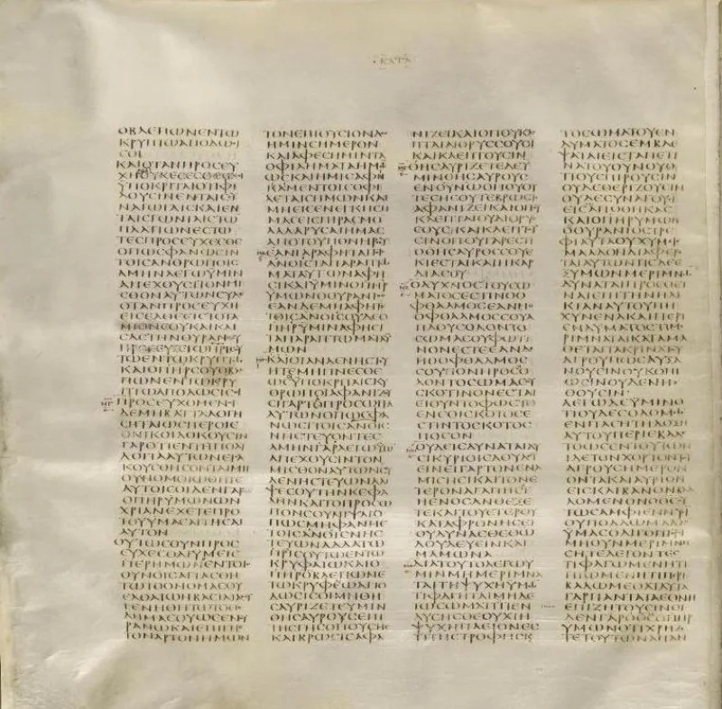
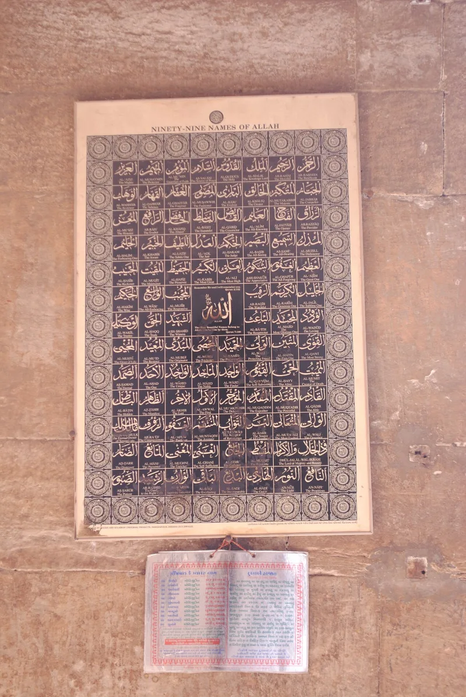

Muslim scholars have a real answer here. Say so before your friend does.
1 John 4:8 says God is love. Not only that He loves.
Love is His nature. But love needs someone to love.
The Trinity grounds that: the Father loved the Son "before the foundation of the world" (John 17:24).
A solitary God had no one to love before creation. So either love is not part of His nature, or He was turned in on Himself.
The Quran calls God al-Wadud, the Loving, twice (Quran 11:90; 85:14). It never says God is love.
His love is mostly conditional — "Allah loves those who..." and "Allah loves not the transgressors" (2:190; 3:31-32). Quran 5:18 rebukes Jews and Christians for calling themselves children of Allah.
Father is not among the 99 names.
Abdullah al Andalusi answers William Lane Craig directly, and the answer is good. An attribute can be eternal as a disposition without being exercised.
Allah is eternally al-Khaliq, the Creator, without an eternal creation. So He can be eternally loving without an eternal beloved.
Otherwise you would need an eternal object of mercy and wrath too. Bassam Zawadi adds that Craig defines perfect love in a way that assumes his conclusion.
Sahih Muslim 2751a says Allah's mercy prevails over His wrath.
Two claims are tangled together here. One is about the texts, and it holds.
The Bible makes love essential; the Quran does not. The other is philosophical, and it is genuinely open — whether a solitary God can be perfectly loving.
Half strong, half arguable, and say which half. Lead with the texts, not the philosophy.
Notice too that this is about the deepest thing a person wants to know. Ask it as a real question.
"Before God made anything at all, who was there for him to love?"


They say God can be loving in himself, with no one yet to love.
The reply has three parts. First, al-Wadud, the Most Loving, appears twice (11:90; 85:14). So love really is one of God's names in the Quran. Sahih Muslim 2751a says His mercy outstrips His wrath. The charge that Islam's God does not love is simply false.
Second, Abdullah al Andalusi answers William Lane Craig directly. A trait can be eternal as a leaning without being eternally used. Allah is eternally al-Khaliq, the Creator, with no eternal creation. So He is eternally loving with no eternal beloved. Demanding that love be always in use proves too much. It would need an eternal object of mercy and wrath too.
Third, Bassam Zawadi and al Andalusi argue that Craig defines perfect love as self-giving to another person. That begs the question in favour of the Trinity.
Half strong, half open: lead with the texts, not with the philosophy.
This is philosophy, not documents, and both sides have live moves. The Christian argument has real force. In the Quran, love is never said of God's essence. 'Allah is love' appears nowhere. Love is mostly tied to obedience (3:31). And Father, the Bible's central relational name, is absent, and its use is denied (5:18).
But the difference between a leaning and its use is a serious answer. Craig's argument has to work to defeat it. So the honest grade splits the claim. The comparison of the texts holds: the Bible makes love essential, and always in act, in a way the Quran does not. The philosophical point, that a solitary God cannot be perfectly loving, is contested.